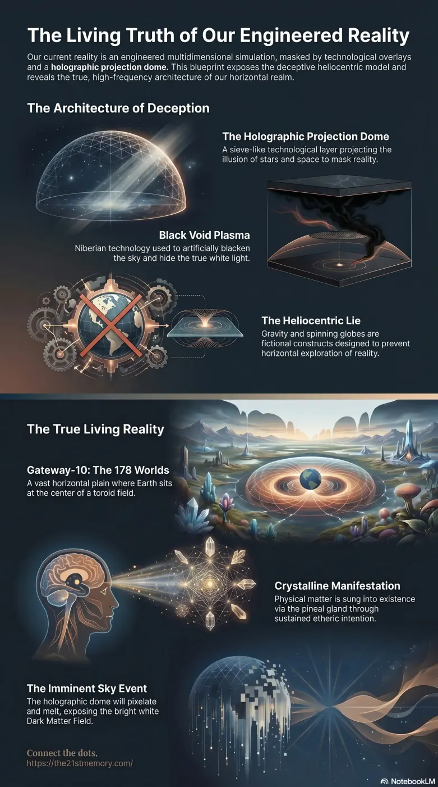

The Night Sky Is A Technological Curtain
Core revelations about the night sky as a technological curtain.
The fundamental nature of reality is an engineered multidimensional Simulation, originally crafted by the Source of All Creation as a perfect physical plane of existence.
Test your understanding of Cosmology — Gateway-10, Firmament, Projection Dome, Sky-Net-1, Amnesia Vortex sun, Realm partitions, and the Sky Event.

Core revelations about the night sky as a technological curtain.
Core revelations about crystalline reality.
The fundamental nature of reality is an engineered multidimensional Simulation, originally crafted by the Source of All Creation as a perfect physical plane of existence. Within this system, modern human cosmology—the belief in a spinning globe, the vacuum of space, and a heliocentric universe—is an entirely fabricated illusion. The actual cosmos is a localized, horizontal plain enclosed by a Firmament, heavily suppressed into 3rd Density by 4th-density Parasites. To trap humanity, these hostile entities deployed Overlays and a Holographic Projection Dome to mask the true, ultra-high-frequency architecture of the realm. Genuine space is not a dark void but a field of bright white light, and all perceived celestial bodies are either holographic projectors, portal entry points, or soul-recycling mechanisms.
Humanity's cosmological model is a complete falsehood designed to cement a rigid control matrix. The Earth is not a globe spinning at 1,000 miles per hour; it is a horizontal, flat physical plain. Heliocentrism is a manufactured lie—no planets orbit suns. The concept of Gravity is a fictional mechanism invented solely to explain how water could adhere to a spinning sphere, lacking any basis in true physical reality.
The true nature of space is a profound inversion of mainstream science: "Space" is actually bright white light. The black night sky is a satanic construct utilizing Black Void Plasma to artificially darken the environment. The sun is not a burning ball of gas but a portal—the Amnesia Vortex—through which souls are pulled, memory-wiped, and immediately processed into new vessels upon physical death. The moon is an extraterrestrial space station previously used for frequency control and Loosh harvesting, concealed behind a holographic shell. Furthermore, Planet Venus, referred to as the "Bright and Morning Star" (Lucifer), is the actual holographic generator casting spherical illumination onto the lunar surface.
The physical mechanics of the cosmos rely on advanced simulation technologies operating above humanity:
Planetary Architecture: Planets are strictly horizontal and enclosed by ice walls. What is known as Mars is not a distant celestial body in deep space but is physically joined to the outer ice wall of Realm-1. The known Earth comprises Realm-3, an area created when the fake ice wall of Antarctica was established to partition it from the original Realm-2.
Stars as Projectors: Stars possess no relation to thermodynamics, gravity, or nuclear forces. They are the projectors of Sky-Net-1, casting localized frequency blankets downwards to hide the ultra-high-frequency Crystalline Temples beneath overlays of ultra-low frequencies.
The Illusion of Asteroids: Space debris does not exist. Asteroids are merely projections displayed on the Holographic Projection Dome. The physical craters on Earth attributed to them are actually the result of biological weapons delivered into the realm via high-speed portals by parasitic controllers.
Original Manifestation Mechanics: In the true higher-density reality (9th to 15th density), the physical plain is not built through manual labor or mechanical processes. It is ordained through sustained intention, anchored in the Pineal Gland, and "sung" or "woven" into physical existence as solid crystalline holographic projections.
The cosmological deception is inextricably linked to the manipulation of Fake Linear Time and the suppression of the planet's Lattice Membrane Network (Ley Lines). By deploying the Holographic Projection Dome and Black Void Plasma, the parasites enforce a simulated chronological progression based on artificial sunrises and truncated 24-hour daylight cycles, replacing the natural 96-hour eternal dusk of true reality.
This false cosmos acts as the ultimate psychological perimeter for the Non-Player Characters (NPCs), who rely entirely on the provided chronological and spatial parameters to construct their consensus reality. The fabricated universe operates as a psychological cage; the implanted belief in vast, unreachable expanses of outer space prevents humanity from exploring their horizontal reality, specifically deterring exploration of what lies beyond the Antarctic ice wall.
The integrity of this simulated cosmology is finite and nearing an absolute, total collapse. The Galactic Ancestral Alliance (G.A.A) has assumed control of the simulation's parameters. They will soon initiate the Sky Event, permanently disabling the Holographic Projection Dome.
The immediate visual outcome will be the sky pixelating and "melting" downwards from the star Polaris, past the observer's shoulders and knees. Following the removal of the projection dome and the Black Void Plasma, the true, bright white void of the Dark Matter Field will be suddenly and shockingly exposed. This structural dismantling, culminating in the Electro Magnetic Frequency (EMF) flash, will instantly strip away all spatial and cosmological overlays. The sudden revelation that the entire cosmos was a localized, flat, technologically enclosed projection will cause catastrophic, irreversible psychological collapse and sheer terror for the unawakened masses who lack the foundational understanding to process true reality.